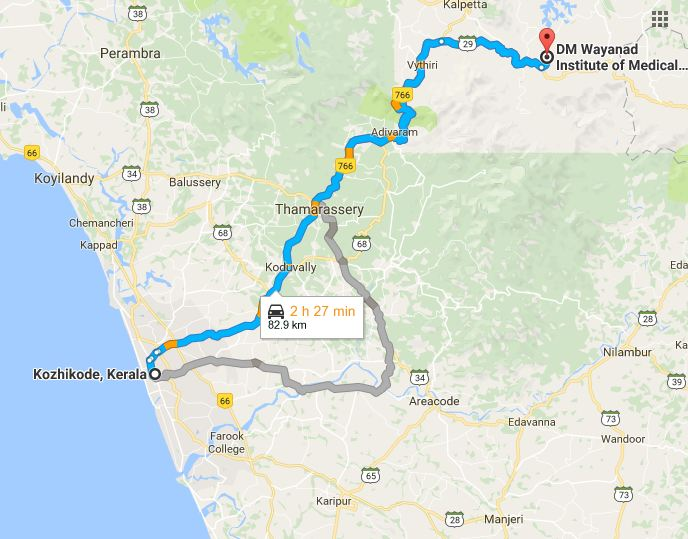

ADDRESS:
DM Wayanad Institute Medical Sciences,
Naseera nagar,
Meppadi P.O.,
Wayanad

DM Wayanad Institute Medical Sciences,
Naseera nagar,
Meppadi P.O.,
Wayanad
Wayanad Institute Medical Sciences is the only Medical College in Wayanad. It is situated at Meppadi. It is 82 Km East of Calicut.
Prayer meeting:Have an initial prayer meeting. Prayer meeting will be held at St. Joseph's Church Meppady.
Core:Core team meeting will be held in college cafeteria in a convinient week day.
How to reach:Catch Kalpetta,Mananthavady or Sulthanbathery Bus from KSRTC Bus stand and get down at Chundal stop. Get Meppady Bus from there to reach College.
Possibility:Can reach out to GEC Wayanad and Pookote Vetinary College and build contacts.